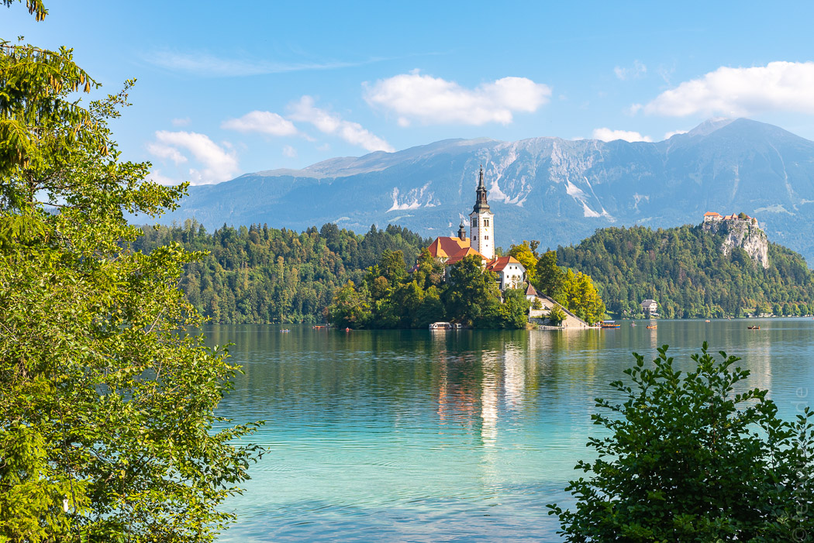
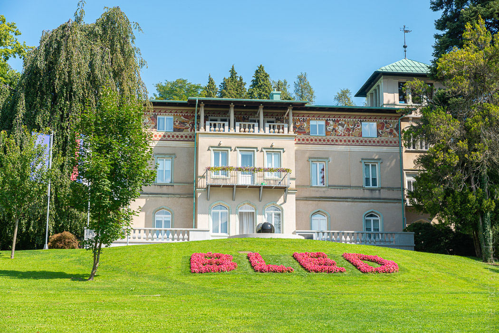
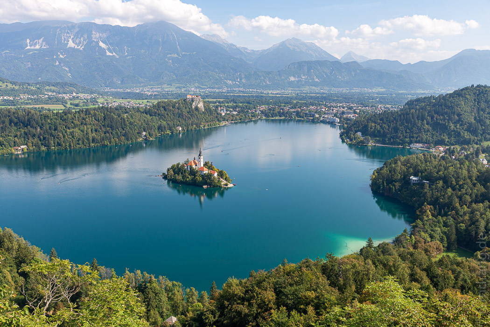
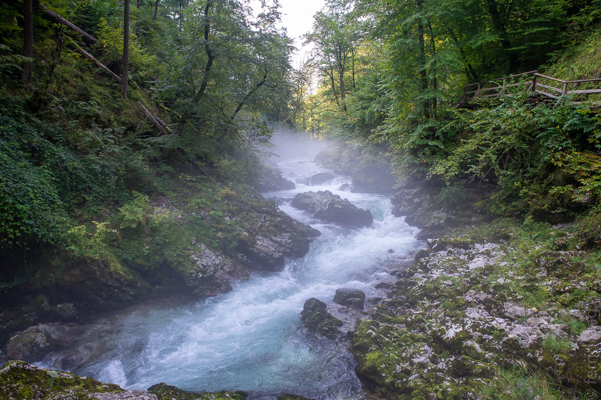
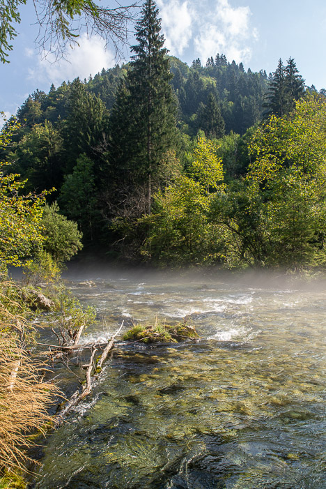
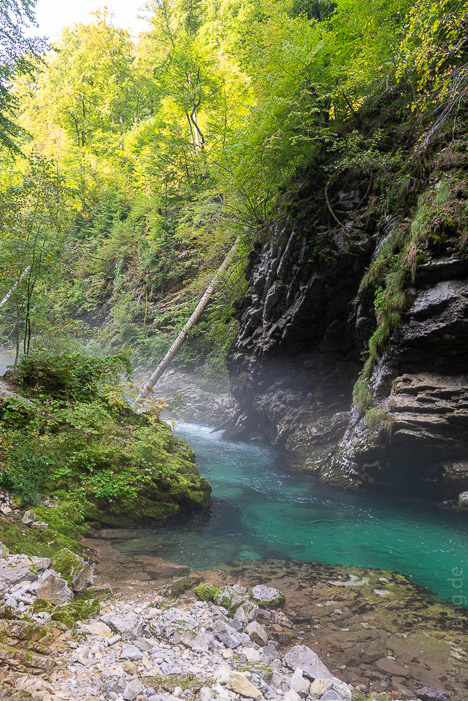
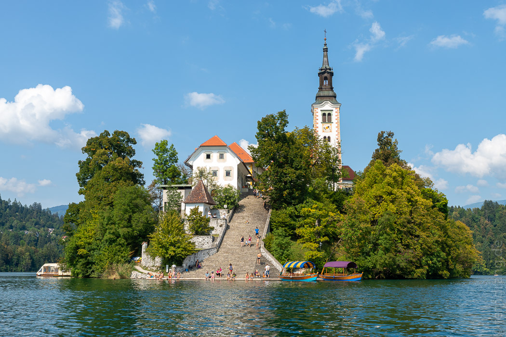

11/09/2020
Bled
Unser Slowenien-Trip ist in Klagenfurt gestartet. Das ist zugegebenermaßen so wenig slowenisch wie es klingt. Aber die Flugverbindung von Köln ist besser und Mietwagen gibt es auch hier. Wir haben ein Fiat 500 Cabrio bekommen und sind direkt „oben ohne“ Richtung Grenze in die Berge gefahren.
Zum Loiblpass schraubt sich die Straße immer steiler hoch. Die österreichischen Grenzer haben sich nicht für uns interessiert. Auf slowenischer Seite hat der deutsche Personalausweis von weitem gereicht. Corona hat Schengen also noch nicht niedergerungen.
Bled ist ein alter Badeort an einem kleinen See. Die Lage ist einmalig schön. Mitten im See hockt ein Kirchlein malerisch auf einem winzigen Inselchen. Oberhalb der Stadt thront eine Burg auf einer nackten Klippe, senkrecht über dem See. 
Zu unserer Überraschung wurde viel gebadet. Das Wasser war spürbar unterhalb der Wohlfühltemperatur, aber nach einem Sonnenbad unheimlich erfrischend. 
Wir hatten eine schöne Unterkunft mit „Glamping“-Zelten an einem kleinen Bach. In der Holz- und Tuchkonstruktion stand ein richtiges Bett - und ein Heizlüfter, der uns erst gewärmt und dann fast erstickt hat.
Man kann ganz entspannt um den See spazieren und findet immer wieder noch schönere Blickwinkel auf die Szenerie. Den besten hat man von einem steilen Hügel aus, der ein paar hundert Meter höher liegt. Auf dem See kreuzen friedlich Ruderboote und Standup-Paddler (SUP), motorisierte Schifffahrt wurde verboten. Stattdessen werden ständig Hubschrauberrundflüge über dem See gemacht… 
Eine kurze Autofahrt entfernt liegt die Vintgar-Klamm. Durch die schmale Schlucht hat sich ein türkis schimmerndes Flüsschen gegraben. Es hing noch ein feiner Morgennebel über dem Wasser und hat der Schlucht eine zauberhafte Atmosphäre verlieren - die schnell von den drängelnden Touristen vertrieben wurde, die sich über die schmalen Stege entlang der Wand schoben.   
Den Sonntag Nachmittag haben wir mit einem geliehenen SUP auf dem See verbracht. Etwas wackelig haben wir es auf das Inselchen von Maria Himmelfahrt geschafft. Von der Kirche aus führt eine große Treppe bis zum Wasser. Dort haben wir zusammen mit ein paar anderen Paddlern die Sonne genossen. Die heimliche Hauptattraktion der Insel ist allerdings nicht das Kirchlein, sondern die köstliche Eisdiele nebenan. 